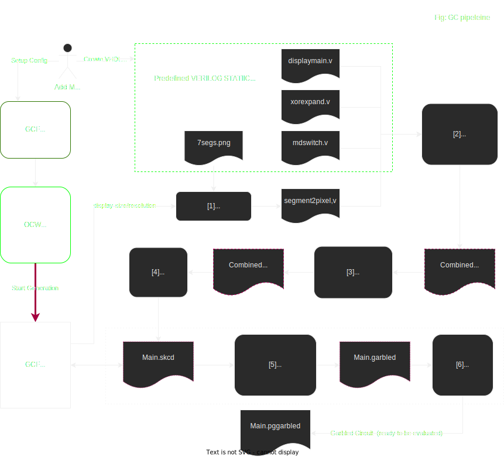

Detailed Pipeline for Display Circuits Production
This is the Garbled Circuits generation detailed pipeline for the Transaction Validation screen use case.
It illustrates the way Garbled Circuit Factory can be used with substrate OCWs for the production of the display garbled circuits used by Interstellar.
Pipeline
NOTE: the file types are mentioned for clarity and to allow matching with calling the executables (e.g. Yosys or ABC) manually, but in practice after [2] all is done in memory, and cached.
On the following schema, cached files are represented with red doted line
The red arrow represents the command to lauch the circuit generation pipeline from OCW GCF

Overview :
[1] Generate “segment2pixel.v” using internal code [using e.g. 7segs.png]
[2] Verilog → .blif : combine all Verilog(displaymain+xorexpand+rndswitch+segment2pixel) using Yosys
[3] .blif → .blif.blif : optimization /synthesis : using ABC
[4] Parsing .blif → .skcd : using internal code
[5] Garbling .skcd → .garbled : using JustGarble
[6] Finalize/Serialize .garbled → .pgarbled : Using internal code; allows for parallel eval of a Garbled Circuit
[1] Generate “segment2pixel.v”
Note : this is the only file in the pipeline that needs to be regenerated when changing size/resolution. The rest (displaymain+xorexpand+rndswitch) are static, and the size/resolution is handled by passing the appropriate “`define” to Yosys. This allows to cache the resulting .skcd of the whole pipeline (cf CircuitDisplayGenerator::GenerateDisplay) using “segment2pixel.v” content as cache key.
7segs.png (or other*) is parsed from an embedded resource into the executable, and prepared for later use (and some pre-computation is done based on the colors of the .png)
*We can use other files like 14segs.png to handle segment based viusla cryptography down the road
CircuitDisplayGenerator::GenerateSegmentToPixelVerilog A “bitmap” is generated with the correct number of digits at the correct positions [in relative coords] E.g. 2-4 digits in the center of the “message window”, and 10 digits vertically oriented for the “pinpad window” If there is an in-memory .skcd cached for this particular “segment2pixel.v” it is returned and that part is done
[2][3][4] Generate .skcd
If there is no cached .skcd for the step [1], one is generated cf CircuitDisplayGenerator::GenerateDisplay
The big steps are self-explanatory (pretty much just calling ABC or Yosys, and handling/parsing the results or errors; most of the business logic is in step [1]) :
if (is_message) {
YosysHelper::CompileVerilog(MESSAGE_SEGMENT2PIXELS_V,
MESSAGE_SEGMENT2PIXELS_V ".blif");
} else {
YosysHelper::CompileVerilog(PINPAD_SEGMENT2PIXELS_V,
PINPAD_SEGMENT2PIXELS_V ".blif");
}
GenerateDefineVerilog(is_message, msgsize, nb_segments, circuit_display_size);
CompileVerilogHelpers(is_message);
ConcatBlifs(is_message);
RunAbc(is_message);
// when segment2pixels cache is disabled, nothing to do, we can return
if (!allow_cache) {
return Blif2Skcd(is_message);
}
// segment2pixels enabled: we need to store the new entry into the SkcdCache
Skcd skcd = Blif2Skcd(is_message);
skcd_cache_->Set(hash_segment2pixels, skcd);
return skcd;
[5][6] Garbling
Technically garbling + “stripping” (i.e. generating the “pre-packmsg”). This is at this step that the pinpad/OTP randomness is introduced, i.e. the .skcd generated at the previous step CAN/SHOULD be reused (and it is) all the time (i.e. it is always reused, except when changing size or resolution).
We can manage 2 modes: on the fly generation and pre-computation of randomized circuits ( with random pinpad and OTP) with whithout transaction message. The second mode will use “stripped circuits” sent to a device ahead of time and the “pre-packmsg” is stored in the DB. Then when creating a transaction, the “pre-packmsg” is used to generate the correct “packmsg” with the desired transaction message (e.g. “Do you authorize sending X BTC to Y address”), and then send it to the Device. The Device then combines the “packmsg” and the “stripped circuits” and proceed to evaluate the circuits (= generating the final bitmap, one for each frame at the target 60+ FPS).
Regarding Transaction Validation displays, sending the circuits ahead of time is no mandatory (i.e. the generation is fast enough, and the size small enough to be able to get them on the spot even on a mobile) although this feature can be used in some specific cases and for other use cases.
Circuit Pipeline API
We have chosen a GRPC implementation mainly because there is no no_std HTTP2 client in Rust, although there are a some no_std Protobuf libs out there in the tokio framework and also this one, but this is only half the required parts.